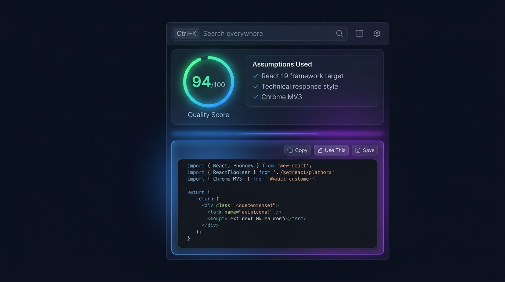
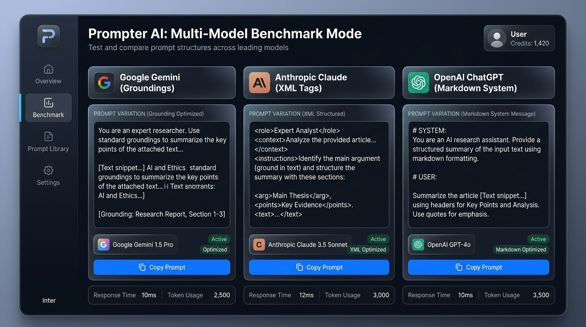
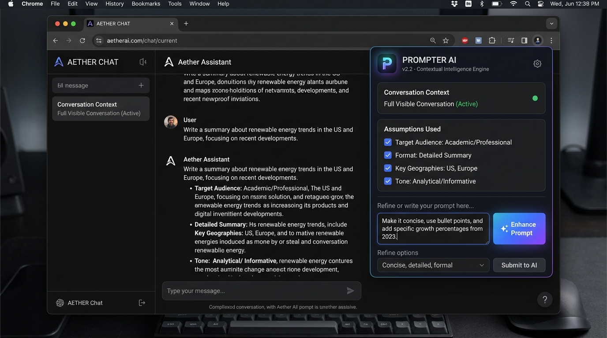

A context-aware, privacy-first Chrome Extension that analyzes conversation history, runs dynamic Claude-style interviews, and optimizes prompts natively inside Gemini, ChatGPT, Claude, & Grok.
20 production-grade pillars designed for seamless workflows.
Remembers tech stack, preferred tone, response length, and custom system rules locally across all sessions.
Extracts visible chat turns, titles, and file chips on Gemini, ChatGPT, Claude, Perplexity, Copilot, & Grok.
Generates side-by-side prompt variations optimized specifically for Gemini, Claude XML, and ChatGPT Markdown.
Contextual Reasoning, Multi-Model Benchmarks, and Native Injected Widgets.

Side Panel & Score Analysis

Multi-Model Benchmark Mode

Native Floating Assistant Widget